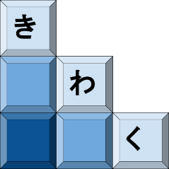
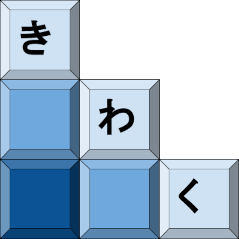

|  |
Kiwaku 0.1-beta
Containers Well Made
|

| |
|  |
Kiwaku 0.1-beta
Containers Well Made
|
|
| |
Multi-dimensional containers are more complex than mono-dimensional ones as the order and orientation of their elements. Most array library try to use term like row major or column major to describe the implicit order of the elements inside an array. If those terms fit well for the 2D cases and have some historical significance, it scales badly on more than 2D or for array which semantic is more rich than just rows and columns.
KIWAKU uses the notion of Axis. The orientation of an array's data can be described as being stored in a given order on a set of Axis. The order of the Axis in the array description then maps to the physical placement of elements in memory.
KIWAKU's Axis can be:
kwk::along<2>. Index-based axis can be used to specify the order of a set of Axis without additional semantic.kwk::axis<"phase">. Name-based axis carry additional domain-specific semantic.When used in shape's definition, the order of Axis is used to deduce the physical memory layout. By design, the right-most Axis in a shape's definition is considered the innermost dimension and contains data in a contiguous way. All other Axis are then used as external dimension in their reverse order.
For example:
kwk::shape<kwk::along<1>, kwk::along<0>>(5,10) defines a 2D shape of 5 x 10 elements that are physically stored in 5 blocks of 10 contiguous elements.kwk::shape<kwk::width, kwk::height>(5,10) defines a 2D shape of 5 x 10 elements that are physically stored in 5 blocks of 10 contiguous elements. The so-called height of this shape is 10 and its width is 5. As the elements are stored by block of 10 contiguously, we can say that this shape is storing data in a column major way. in 5 blocks of 10 contiguous elements.kwk::shape<kwk::height, kwk::width>(5,10) defines a 2D shape of 5 x 10 elements that are physically stored in 5 blocks of 10 contiguous elements. The so-called width of this shape is 10 and its height is 5. As the elements are stored by block of 10 contiguously, we can say that this shape is storing data in a row major way.See how the naming of the Axis specifies the semantic over the physical storage while the actual definition of the shape stays the same. One could decide to define a 3D shape stored "channel first" by using a shape defined as kwk::shape<kwk::width,kwk::height,kwk::channel>.
An Extent is a value that represent the number of element along a given axis of a container. kwk::shape and kwk::stride can be constructed from a series of Extent. The numerical value associated to an Extent is named dimension.
Valid values for an Extent can be:
42. Its associated dimension is given by its value.kwk::fixed<13> or 37_c. Its associated dimension is given by its value.kwk::_. Its associated dimensions is 0.kwk::as<T>, which acts as typed version of kwk::_. Its associated dimensions is T{0}.kwk::height, kwk::along<2>[kwk::as<int>] or kwk::axis<"phase">. Its associated dimensions is a properly typed 0.kwk::height = 3 or kwk::along<2> = 48_c. Its associated dimension is given by its value.The order of a container is defined as its number of dimensions. For KIWAKU, this number of dimensions is fixed at compile-time by the number of Axis used in a shape's definition.